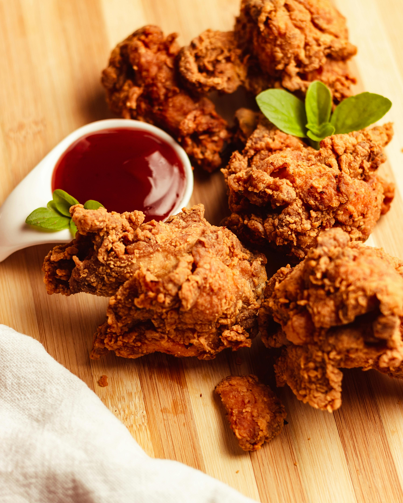

Home
Fried Chicken

From films to night markets with street food, practically everything tells us just how well-loved fried chicken is. A number of shows I’ve watched have had characters enjoying that delicious crunch, tempting viewers like me to dial the phone and have some delivered to my doorstep. But here at Panlasang Pinoy, we teach you how to go the affordable and fun route, and create some Crispy Garlic Fried Chicken Wings, yourself!
Ingredients
- Chicken
- Egg
- Cornstarch
- All-purpose flour
- Cooking oil
Marinade Ingredients
- Garlic powder
- Onion powder
- Salt
- Paprika
- Garlic
- Ground white peper
- Soy sauce
White sauce ngredients
- Mayonnaise
- Sour cream
- Dill
- Parsley
- Garlic powder
- Onion powder
- Kosher salt
- Ground black pepper
Steps in cooking the fried chicken
- Combine the marinade ingredients in a bowl.
- Toss these into a container, and add your chicken. Mix everything together. Don’t leave out any part of the chicken as you are coating this.
- Then just put the container in the fridge, and let the chicken marinate for a minimum of 1 hour.
- Make the ranch sauce by mixing all the white sauce ingredients in a bowl.
- Combine the breading ingredients and coat the chicken.
- Put the cornstarch and flour inside gradually and creack an egg then mix with the chicken.
- Fry the chicken.
- Let the chicken rest and then double fry it.
- Serve with ranch sauce